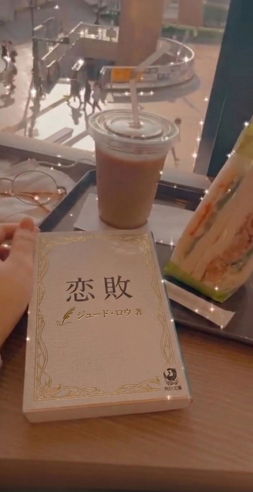

今日ゆめちゃんのこと思い出した
今日、カフェでゆめちゃんが好きだったケーキを注文した。ひとくち食べたら、あの子のことが急に全部よみがえってきて、泣きそうになった。
……でも悲しいだけじゃなくて、なんかあったかい気持ち。ゆめちゃん、ちゃんとあそこにいたんだな。
積んでた本をようやく消化してきました。ノンフィクション系を一気に3冊読んだ。
しばらくミステリを読まない日が続いてたのに、またゆめちゃんのことを思い出してしまった。「ぱっと見じゃない読み方があるってこと…？」って書いてた記事のこと、ずっと引っかかってる。
桜が見える席でコーヒーを飲んできました。風が強くて花びらが舞ってきて、本の上に落ちたりして。すごくよかった。
外が騒がしくても、カフェの中だけ時間がゆっくりになる感じ。そういう場所が好きです。
「そして五人がいなくなる」の続きを読み始めました。やっぱり伏線の張り方が好きだなと思いながら読んでる。
読みながら、何かを「ぱっと見とは違う読み方」で探しようとする自分に気づく。そういう癖、ゆめちゃんのブログを読んでから強くなった気がする。
3月になったので、今年の読書目標を改めて整理してみました。目標は読書50冊！ジャンルはミステリ・SF・エッセイをまんべんなく読みたいと思ってます。
とりあえず積んでる本から消化するつもり。森博嗣の「すべてがFになる」、はやみねかおるの夢水清志郎シリーズの続き、ノンフィクション何冊か。あと今年は絵本も読み返したくて、「100万回生きたねこ」を本棚から出してきてる。年明けから少しずつ読めているので、いいペースが保てている気がします。
おすすめの本があればぜひ教えてください〜。カフェで読める系が特に好きです☕
最近、東野圭吾の「ナミヤ雑貨店の奇蹟」を読んでました。廃業した雑貨店のポストに手紙が届いて、過去と現在がつながっていく話。
誰かに届けるために残された言葉って強いんだなって思った。読みながら、ずっと胸が温かかった。
カフェ巡りの帰りに本屋に寄って、「恋敗」という小説を買ってきました。架空の秘密組織が舞台のミステリで、ちょっとクセのある登場人物が多くておもしろい。

今日のカフェ席。本を読むなら窓際が落ち着く
読んでたら、あるシーンでキャラクターが「ウーロンハイにカットレモン」って注文するシーンがあって。
あれ、この言葉どこかで……？ってなって、しばらく考えたら思い出した。うちの内勤さんがよく飲んでるやつだ。なんか妙にリアルで、一人でぷっと笑っちゃった。カフェで声に出なくてよかった笑
本自体はすごく面白いので読み終わったら感想書きます！
森博嗣の「すべてがFになる」読みました。孤島の研究所が舞台の密室もので、読み進めるにつれて「あれ、これどういうこと…？」ってなっていく感じ。主人公が何かを見落としたまま話が進んでいって、最後にまとめて意味がわかる構造。
読み返したら序盤から全部ヒントだった。こういう仕掛けって気づくと悔しくて、でもそれが楽しい。
ゆめちゃんが休んでからもう10日ほど経つんですね。元気にしてるかな。
私、ゆめちゃんのブログわりと好きで、よく読んでたんですよ。ふと気になって最後の投稿を読み返してたんですけど……なんか変な感じがして。うまく言えないんですけど、普通に読むのとはちょっと違う見方をすると、何かが見えてくるような気がするんですよね。
ゆめちゃん、どこにいるんだろ。
お店の近くに新しいカフェができたので、シフト前に寄ってみました。豆から選べるコーヒーがあって、店員さんが丁寧に説明してくれた。
窓際の席で本を広げたら居心地がよくてついつい長居してしまった。カフェって席の向きと窓の大きさで全然変わりますよね。ここは合格。また来ます。
はやみねかおるの「そして五人がいなくなる」読み終わりました！夢水清志郎シリーズの第1作で、伏線の張り方がすごく好みだった。
一見普通の日常描写に、後から振り返ると全部意味があった、という構造が好きです。もう一周読み返してる。
こういう「普通に読むと見えないものが仕込んである」系が一番好きかもしれない。
秋になるとカフェに行きたくなる。窓の外が暗くなるのが早くなって、コーヒーの温かさがちょうどよくなって。
今日はお気に入りのカフェで本を1冊読み切りました。外がうっすら暗くなるのを感じながら本を読んでる時間、最高です。
こういう時間のためにここで働いてる気がしてきた笑
はじめまして、なのです。カフェ巡りと読書が好きです。
よろしくおねがいします
のんびり書いていくつもりなので、のんびり読んでもらえたら嬉しいです。蟠龍閣もよろしくお願いします♪